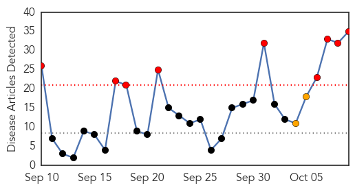
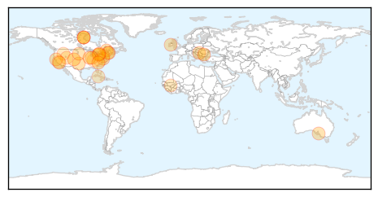
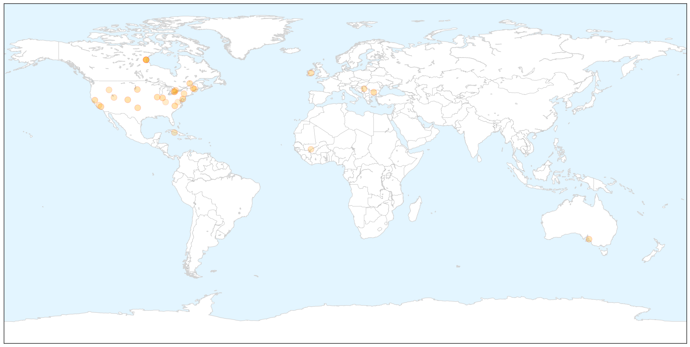
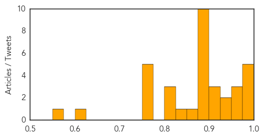
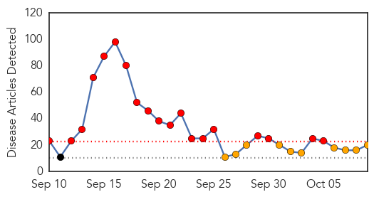
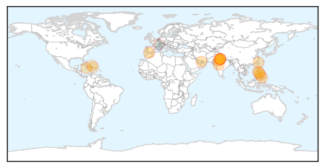
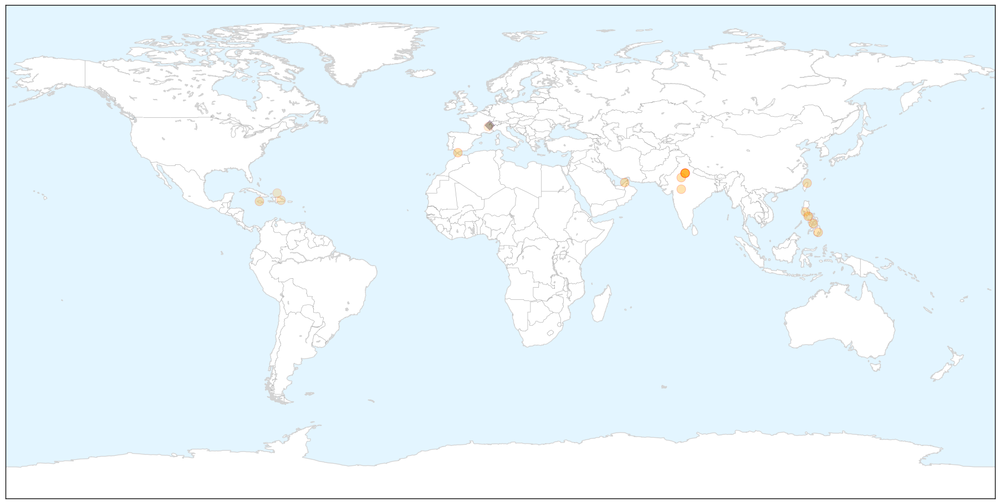
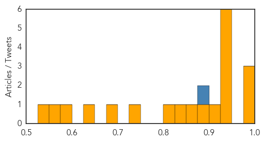

Influenza
30-Day Web Trend
8 alerts, 2 warnings

30-Day Twitter Trend
0 alerts, 0 warnings

Article Locations

X

Article Confidences
Top Articles:
- 0.995
- What you need to know about flu shots - KOAA.com
- 0.994
- GOVERNOR MARKELL AND PUBLIC HEALTH URGE FLU VACCINATION
- 0.988
- Flu vaccine available at Health Department
- 0.987
- Switzerland variant influenza strain to cause epidemic this year
- 0.977
- Health commissioner urges Indiana residents to get flu shots
- 0.971
- Flue vaccine expected to be stronger than last year's
- 0.970
- Get your flu shot; it's never too early
- 0.952
- Get your flu shots
- 0.943
- Vaccine Against Influenza Ineffective One Day
- 0.930
- County Health Department schedules flu vaccine clinic
- 0.925
- Ontario sticks with flu message
- 0.925
- Guest View: Budget impasse devastating public health services in Illinois
- 0.920
- Strong and Kingfield Health Centers to offer flu clinics for MSAD #58 students
- 0.898
- Today's stories from newspapers in Flamborough
- 0.898
- Today's stories from newspapers in Flamborough
- 0.898
- Today's stories from newspapers in Flamborough
- 0.898
- Today's stories from newspapers in Flamborough
- 0.898
- Today's stories from newspapers in Flamborough
- 0.898
- Today's stories from newspapers in Flamborough
- 0.898
- Today's stories from newspapers in Flamborough
- 0.887
- Stanford Medicine Profiles
- 0.883
- Food, water and health care: WHO reviews basic services for refugees crossing Serbia
- 0.879
- Regional Health now offering flu vaccinations
- 0.851
- Toddlers infected by identical strains of E. coli — Health — Bangor Daily News — BDN Maine
- 0.837
- FLU SEASON: Clinics being planned by health unit
- 0.806
- Today's stories from newspapers in Caledon
- 0.806
- Today's stories from newspapers in Caledon
- 0.806
- Today's stories from newspapers in Caledon
- 0.751
- October 9, 2015 Archives
- 0.751
- October 9, 2015 Archives
- 0.751
- October 9, 2015 Archives
- 0.751
- October 8, 2015 Archives
- 0.751
- October 8, 2015 Archives
- 0.622
- PPD gets medical-products, avian-flu research contracts with U.S. Army, BARDA
- 0.560
- Which Vaccination Exemptions Are Allowed by Virginia?
Top Tweets:
-
No tweets found for Oct 09, 2015
Dengue Fever
30-Day Web Trend
19 alerts, 10 warnings

30-Day Twitter Trend
0 alerts, 0 warnings

Article Locations

X

Article Confidences
Top Articles:
- 0.990
- Scrub typhus surpasses dengue in Rajasthan's biggest government hospital
- 0.978
- Dengue Epidemics And Strong El Nino Season
- 0.976
- Delhi records 9,438 dengue cases till October 10--Know the symptoms to protect yourself
- 0.949
- With ‘alarming’ increase of cases: LMP–Cebu urges LGUs to act against dengue
- 0.948
- Steps taken to check spread of viral fever in Karur
- 0.948
- More barangays report dengue cases
- 0.939
- Desperate Families in Delhi as Dengue Overwhelms Hospitals
- 0.929
- Number of dengue cases crosses 9,000 mark in Delhi
- 0.928
- Mosquito larvae found in residential colonies
- 0.921
- Dengue doctors at Delhi hospital flocked abroad even as epidemic raged
- 0.892
- Dengue cases in Davao down by half
- 0.868
- Efforts against dengue fever needed over rainy holiday weekend
- 0.832
- Dengue cases to rise in 2016 due to El Niño – DOH
- 0.818
- Fenton Ferguson warns against politicising health
- 0.745
- Prediction Alert: Dengue Epidemic Likely To Be More Severe In South-East Asian Countries In 2016
- 0.684
- Catholic Church and Public Health together against dengue
- 0.640
- Delhi's Dengue Death Toll Hits 30, Total Number of Cases Rise to 9,438
- 0.593
- On alert for dengue fever
- 0.557
- Ensure corporations use grant to fix dengue, govt told
- 0.532
- – World’s Top Doctor Urges ‘Strong’ Paris Climate Deal
Top Tweets:
- 0.877
- Dr Chan: In a given year WHO manages around 100 outbreaks of familiar diseases like cholera dengue meningitis and many others